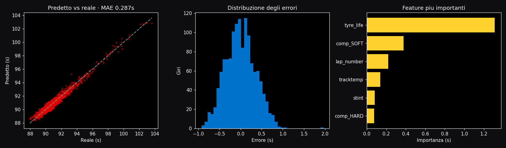

Sistema di analisi che integra la telemetria ufficiale (FastF1), un modello di machine learning per il degrado degli pneumatici e un ottimizzatore della strategia di pit-stop. Lo strumento seguente viene eseguito interamente lato client.
Regolando i parametri di gara e del modello di degrado, il sistema esamina tutte le strategie ammissibili e restituisce quella con il tempo di gara minimo, aggiornando il risultato in tempo reale.
I valori di base e degrado precaricati sono rappresentativi di ciascun circuito. Nella pipeline Python gli stessi parametri vengono stimati dai dati reali FastF1 della sessione scelta.
Ogni mescola è modellata come tempo = base + degrado · età. La soft è veloce ma si consuma; la hard dura. L'ottimizzatore bilancia proprio questo.
Lo stesso procedimento della pipeline Python, applicato al circuito selezionato sopra.
Per ogni mescola il tempo sul giro è modellato come tempo = base + degrado · età. Su dati reali i due parametri si stimano con una regressione sui giri della sessione (FastF1).
Il serbatoio si svuota e l'auto diventa più veloce col passare dei giri. Un termine dedicato separa questo effetto dall'usura, così il degrado non risulta gonfiato dal peso benzina.
Uno stint di L giri costa la somma dei tempi giro per giro; il tempo gara totale aggiunge il tempo perso ai box (pit-loss) per ogni sosta. Dipende dal circuito: giri totali e pit-loss cambiano da pista a pista.
Il sistema genera tutte le combinazioni ammissibili di soste, mescole e lunghezza degli stint (rispettando il vincolo delle due mescole), ne simula il tempo e restituisce il minimo. Per una gara da 53 giri sono migliaia di piani valutati.
Un modello di gradient boosting stima il tempo sul giro da età gomma (anche non lineare), carburante, temperatura pista, stint e mescola. Selezionato per confronto tra più algoritmi e ricerca degli iperparametri, validato con cross-validation e su test set separato.

Grafico generato da python scripts/train_models.py --synthetic --tune — eseguibile in locale, anche offline.
Ricerca esaustiva su numero di soste, mescole e lunghezza degli stint. Rispetta il vincolo delle due mescole e quantifica il vantaggio dell'undercut.
Modello gradient boosting per prevedere i tempi sul giro, con cross-validation.
Timing e telemetria ufficiali, puliti in dataset pronti all'uso.
Stima di base pace e degrado per mescola via regressione sui dati reali.
Ricostruzione delle posizioni in pista nel tempo dalla telemetria.
Codice sorgente, notebook di validazione e dashboard sono disponibili nel repository.
Apri il repository